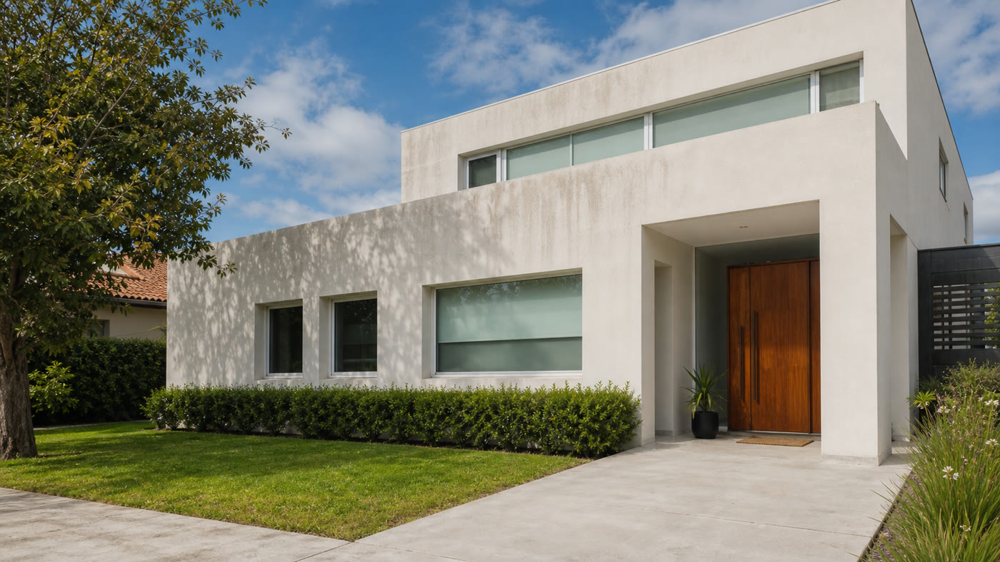

Resumen: para cotizar bien, mandá fotos del frente completo, un video del lateral si aplica, ubicación y altura aproximada.

Qué variables cambian el presupuesto
Dos casas con frentes parecidos pueden tener costos distintos. Una fachada baja, con buen acceso al agua y suciedad superficial, no exige el mismo tiempo que una pared alta, con manchas acumuladas o sectores difíciles de alcanzar.
- Metros aproximados de frente y laterales.
- Altura de paredes, aleros o sectores superiores.
- Tipo de material: pintura, revoque, piedra, hormigón o revestimiento.
- Acceso al agua, distancia de manguera y lugar para trabajar.
- Nivel de suciedad, verdín, humedad superficial o marcas puntuales.
Por qué conviene cotizar por proyecto
En limpieza exterior, un precio fijo sin ver el lugar suele ser impreciso. Lo más razonable es estimar por proyecto: qué se limpia, cuánta altura hay, cuánto tiempo lleva preparar el área y qué herramientas hacen falta.
Si solo se limpia un frente, el trabajo puede ser más simple. Si además se suman laterales, techo, patio o pisos exteriores, cambia el alcance y conviene planificarlo como una intervención completa.
Por qué no siempre conviene publicar un precio único
Mucha gente busca “precio lavado de fachada” o “cuánto sale hidrolavar un frente” esperando una respuesta cerrada. El problema es que un número suelto puede quedar corto o largo si no se ve la casa. Un frente bajo, sin rejas, con buena presión de agua y poca suciedad se resuelve distinto que una fachada alta con aleros, plantas, ventanas grandes y manchas viejas.
En una cotización seria de lavado a presión se mira el trabajo completo: preparación, tiempo de limpieza, cuidado de ventanas, recorrido de manguera, altura y revisión final. Por eso, para un servicio local en San Martín o alrededores, lo más práctico es mandar fotos y recibir una estimación ajustada al caso real.
Señales de que el frente necesita limpieza
No hace falta esperar a que la fachada esté muy deteriorada. Cuando el frente pierde brillo, se notan marcas de lluvia debajo de bordes o aparecen zonas verdosas cerca de plantas, ya puede ser buen momento para consultar.
- Manchas oscuras alrededor de ventanas, aleros o zócalos.
- Polvo pegado en paredes que no sale con una manguera común.
- Verdín o humedad superficial en sectores con sombra.
- Entrada, vereda o patio con un color muy distinto al original.
- Casa que se ve descuidada aunque la pintura todavía esté en buen estado.
Cómo pedir una cotización más precisa
Antes de escribir por WhatsApp, prepará esta información:
- Foto frontal tomada desde la vereda o el jardín.
- Primer plano de la mancha o suciedad principal.
- Video corto mostrando laterales y acceso al área.
- Barrio o localidad para estimar traslado.
- Si hay techo, pared alta o acceso complicado.
Qué puede subir o bajar el costo final
El costo puede bajar cuando el trabajo está concentrado en una zona simple, con buen acceso y pocas superficies delicadas. Puede subir cuando se suman laterales, techo, pisos exteriores, rejas, muebles para mover o zonas altas que requieren más tiempo.
También importa el estado de la superficie. Una limpieza de mantenimiento no es lo mismo que un frente que nunca recibió hidrolavado y tiene años de suciedad acumulada. Cuanto mejor sea la información inicial, menos margen de error hay en el presupuesto.
Servicios relacionados
Si estás evaluando el frente, probablemente también te sirvan las páginas de lavado de fachadas y limpieza de pisos exteriores.